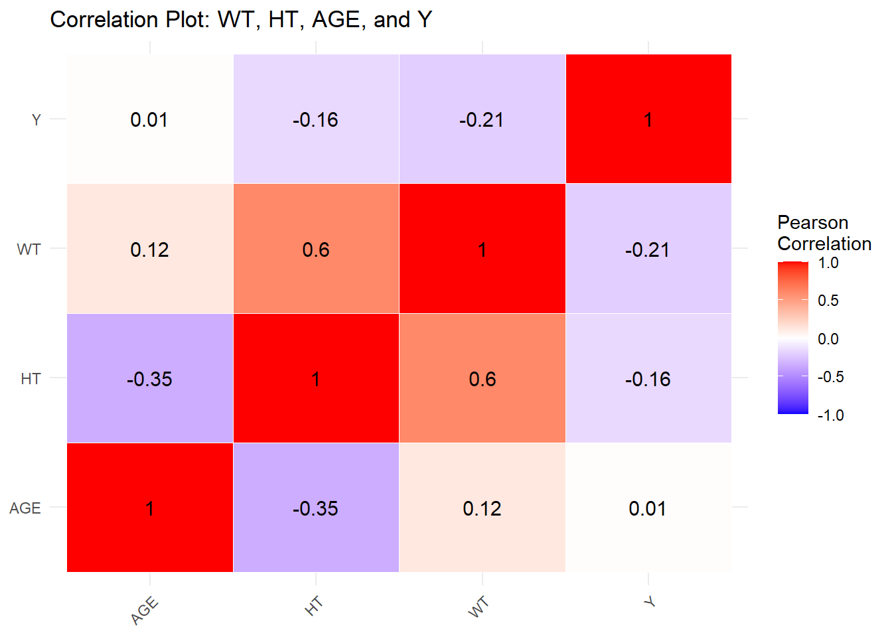
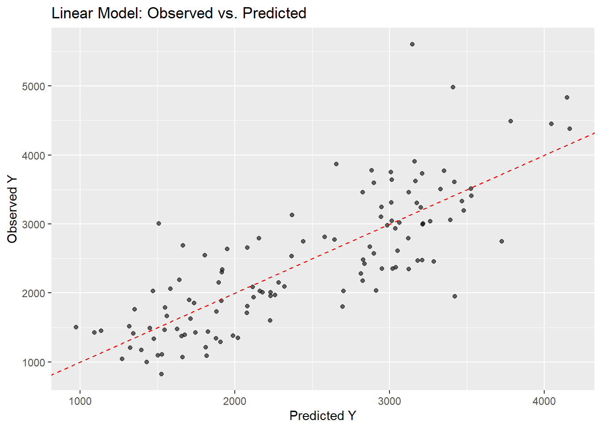
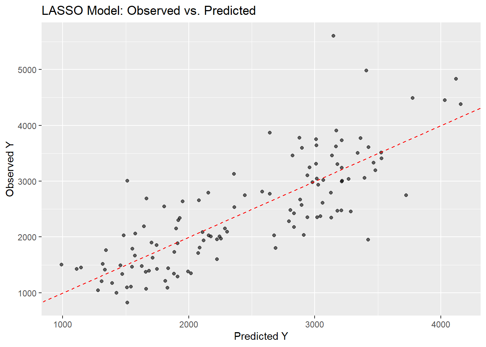
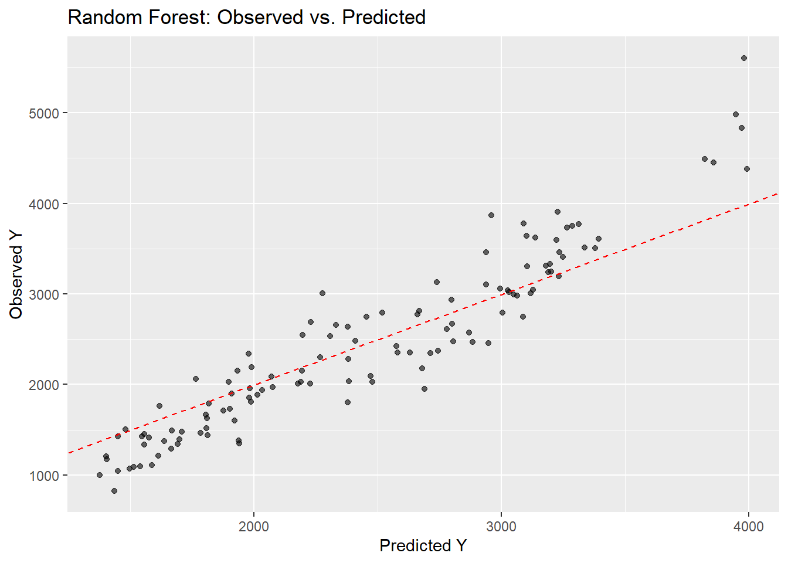
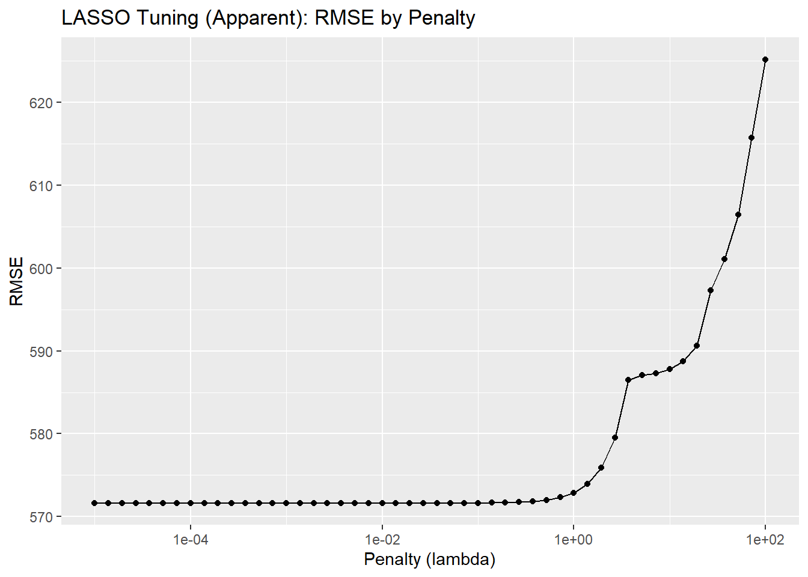
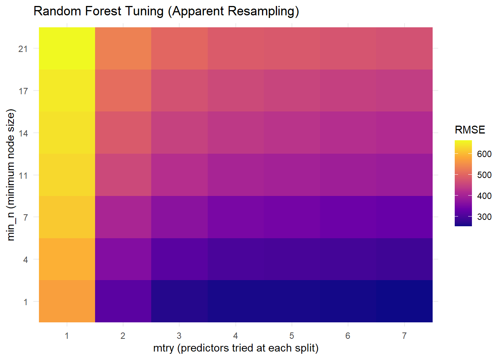
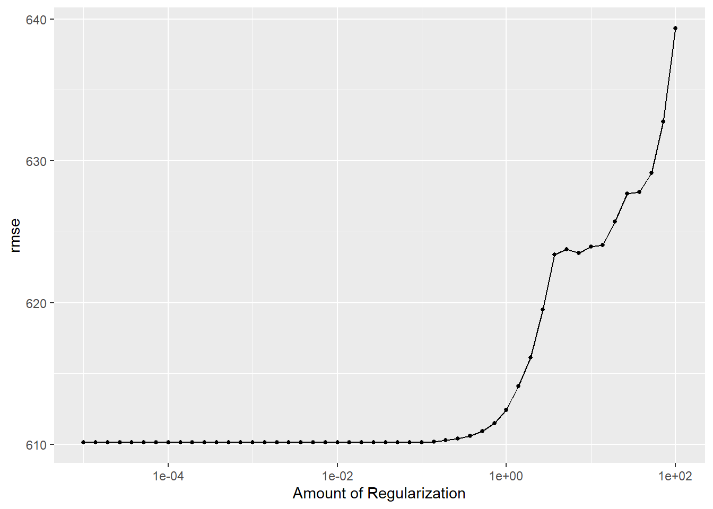
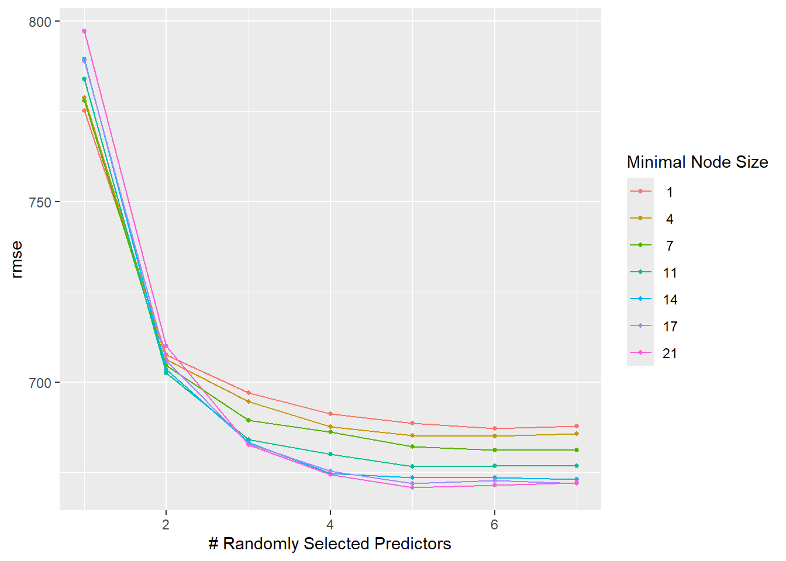

#install packages that are missing if necessary
library(tidyverse)
library(ggplot2)
library(tidymodels)
library(here)
library(skimr)
library(dplyr)
library(knitr)
library(tibble)
library(glmnet)
library(ranger)
library(purrr)ml-models-exercise
ML Models Exercise
Loading packages
Set the seed.
rngseed = 1234
set.seed(rngseed)Loading the dataset and double checking.
mavoglurant_cleaned_data <- here::here("ml-models-exercise", "processed_mavoglurant.rds")
mavoglurant_cleaned <- readRDS(mavoglurant_cleaned_data)
summary(mavoglurant_cleaned) Y DOSE AGE SEX RACE
Min. : 826.4 Min. :25.00 Min. :18.00 1:104 1 :74
1st Qu.:1700.5 1st Qu.:25.00 1st Qu.:26.00 2: 16 2 :36
Median :2349.1 Median :37.50 Median :31.00 7 : 2
Mean :2445.4 Mean :36.46 Mean :33.00 88: 8
3rd Qu.:3050.2 3rd Qu.:50.00 3rd Qu.:40.25
Max. :5606.6 Max. :50.00 Max. :50.00
WT HT
Min. : 56.60 Min. :1.520
1st Qu.: 73.17 1st Qu.:1.700
Median : 82.10 Median :1.770
Mean : 82.55 Mean :1.759
3rd Qu.: 90.10 3rd Qu.:1.813
Max. :115.30 Max. :1.930 head(mavoglurant_cleaned) Y DOSE AGE SEX RACE WT HT
1 2690.52 25 42 1 2 94.3 1.769997
2 2638.81 25 24 1 2 80.4 1.759850
3 2149.61 25 31 1 1 71.8 1.809847
4 1788.89 25 46 2 1 77.4 1.649993
5 3126.37 25 41 2 2 64.3 1.560052
6 2336.89 25 27 1 2 74.1 1.829862Making a third category for race out of the ctegoris 7 and 88.
#Group levels "7" and "88" into new level "3"
mavoglurant_cleaned_1 <- mavoglurant_cleaned %>% mutate( RACE = fct_collapse(RACE, "3" = c("7", "88"))) Making a pairwise correlation plot using the continuous variables (including age which might not always be considered continuous)
#Select continuous variables (including age)
numeric_data <- mavoglurant_cleaned_1 %>% select(WT, HT, AGE, Y)
#Compute Pearson correlation matrix
cor_matrix <- round(cor(numeric_data, use = "pairwise.complete.obs"), 2)
#Convert matrix to long format
cor_long <- as.data.frame(cor_matrix) %>% rownames_to_column("Var1") %>% pivot_longer(-Var1, names_to = "Var2", values_to = "Correlation")
#Visualize the correlation matrix as a heatmap
ggplot(cor_long, aes(x = Var1, y = Var2, fill = Correlation)) +
geom_tile(color = "white") + # Create colored tiles for each correlation pair
scale_fill_gradient2(low = "blue", high = "red", mid = "white",
midpoint = 0, limit = c(-1, 1),
name = "Pearson\nCorrelation") + # Color scale
geom_text(aes(label = Correlation), size = 4) + # Add numeric correlation values
labs(title = "Correlation Plot: WT, HT, AGE, and Y",x = NULL, y = NULL) +
theme_minimal() + theme(axis.text.x = element_text(angle = 45, hjust = 1))
#####Feature engineering using BMI
The formula for BMI is BMI= Weight/(height in meters)^2. We will assume that the weight in the dataset is given in kilograms and the height is in meters based on the values in the dataset (weight ranges between 56 and 116 (kg) and height between 1.52 and 1.93 (m) which are consistent will normal ranges in average adults).
We will calculate a variable for BMI:
#Add BMI using WT (assuming that they are in kg) and HT (assuming that they are in meters)
mavoglurant_cleaned_1 <- mavoglurant_cleaned_1 %>% mutate(BMI = WT / ((HT)^2))
#Check the range of BMI to confirm it's plausible
summary(mavoglurant_cleaned_1$BMI) Min. 1st Qu. Median Mean 3rd Qu. Max.
18.69 24.54 26.38 26.63 29.70 32.21 This range for BMI between 18.69 and 32.21 is realistic and so we suspect that our assumptions are correct.
#####Model building:
We will create three models, a linear model, a LASSO model and a RF (random forest) model. The first stage will be without CV values before moving to include and evaluate with the CV values. After developing all three models we will evaluate them on the dataset and compare the RMSE values.
#######Starting with the linear model:
Creating a modeling recipe and variable starting out with our linear model with all predictions
#Create a modeling dataset
model_data <- mavoglurant_cleaned_1
#Define the recipe: Y ~ all other predictors
lm_recipe <- recipe(Y ~ ., data = model_data)
#Define the linear model using parsnip
lm_model <- linear_reg() %>% set_engine("lm") %>% set_mode("regression")
#Combine recipe and model into a workflow
lm_workflow <- workflow() %>% add_recipe(lm_recipe) %>% add_model(lm_model)Fitting the linear model and seeing a summary:
#Fit the model to the full dataset
lm_fit <- lm_workflow %>% fit(data = model_data)
#Extract fitted model object
lm_fit_model <- lm_fit %>% extract_fit_parsnip()
summary(lm_fit_model$fit)
Call:
stats::lm(formula = ..y ~ ., data = data)
Residuals:
Min 1Q Median 3Q Max
-1474.59 -350.58 -95.58 332.52 2459.99
Coefficients:
Estimate Std. Error t value Pr(>|t|)
(Intercept) 32051.213 10161.419 3.154 0.00207 **
DOSE 59.116 4.726 12.509 < 2e-16 ***
AGE 4.533 7.471 0.607 0.54525
SEX2 -434.999 209.974 -2.072 0.04061 *
RACE2 157.942 124.315 1.271 0.20656
RACE3 -257.500 214.859 -1.198 0.23329
WT 145.476 59.484 2.446 0.01603 *
HT -16839.750 5727.944 -2.940 0.00400 **
BMI -535.654 187.911 -2.851 0.00520 **
---
Signif. codes: 0 '***' 0.001 '**' 0.01 '*' 0.05 '.' 0.1 ' ' 1
Residual standard error: 594.3 on 111 degrees of freedom
Multiple R-squared: 0.6437, Adjusted R-squared: 0.618
F-statistic: 25.07 on 8 and 111 DF, p-value: < 2.2e-16We see an R squared of 0.64 which indicates that this is a statistically strong model. We previously assessed the model and found its performance to be good although we did identify some limitations.
We will move on to creating a LASSO regression model without any CV values.
#######LASSO model:
We need to specify a new recipe for the LASSO model because LASSO does not work with variabes that are not numeric, and so we need to generate dummy categorical predictors to replace our categorical variables (Sex and Race) for our model. We include code to remove any constant predictors that might exist (we don’t seem to have any but this is good practice when assigning dummy predictors).
#Provide dummy encoding for categorical variables in recipe
lasso_recipe <- recipe(Y ~ ., data = model_data) %>%
step_dummy(all_nominal_predictors()) %>%
step_zv(all_predictors()) #Remove zero-variance (constant) predictors if presentWe specify the LASSO model and create the workflow with the parameters outlined
#Define the LASSO model with penalty = 0.1 and mixture = 1 (LASSO)
lasso_model <- linear_reg(penalty = 0.1, mixture = 1) %>% set_engine("glmnet") %>% set_mode("regression")
lasso_workflow <- workflow() %>% add_recipe(lasso_recipe) %>% add_model(lasso_model)Move on to fitting and viewing the coefficients of the model
#fit the model
lasso_fit <- lasso_workflow %>% fit(data = model_data)
#View coefficients at penalty = 0.1
lasso_fit_model <- lasso_fit %>% pull_workflow_fit()Warning: `pull_workflow_fit()` was deprecated in workflows 0.2.3.
ℹ Please use `extract_fit_parsnip()` instead.#Extract coefficients (at lambda = 0.1)
coef(lasso_fit_model$fit, s = 0.1)9 x 1 sparse Matrix of class "dgCMatrix"
s1
(Intercept) 30579.025889
DOSE 59.152528
AGE 4.428095
WT 136.796507
HT -16008.945383
BMI -508.305547
SEX_X2 -430.708626
RACE_X2 157.552133
RACE_X3 -250.959842#######Random Forest (RF) model:
We will now work on the random forest model, starting with setting the recipe with dummy values encoded.
# Recipe with dummy encoding and zero-variance removal
rf_recipe <- recipe(Y ~ ., data = model_data) %>%
step_dummy(all_nominal_predictors()) %>%
step_zv(all_predictors())We need to set the seed again, using the same rngseed value.
rngseed = 1234
set.seed(rngseed)Setting the RF model and workflow.
# Specify the random forest model using ranger
rf_model <- rand_forest() %>% set_engine("ranger", seed = rngseed) %>% set_mode("regression")
rf_workflow <- workflow() %>% add_recipe(rf_recipe) %>% add_model(rf_model)Continuing to fit the model and viewing a RF summary of this:
rf_fit <- rf_workflow %>% fit(data = model_data)
# Extract the fitted model
rf_fit_model <- rf_fit %>% extract_fit_parsnip()
# View model summary
rf_fit_model$fit # This is the underlying ranger objectRanger result
Call:
ranger::ranger(x = maybe_data_frame(x), y = y, seed = ~rngseed, num.threads = 1, verbose = FALSE)
Type: Regression
Number of trees: 500
Sample size: 120
Number of independent variables: 8
Mtry: 2
Target node size: 5
Variable importance mode: none
Splitrule: variance
OOB prediction error (MSE): 496631.8
R squared (OOB): 0.462951 # View variable importance (default: impurity)
rf_fit_model$fit$variable.importanceNULLFirst we will make predictions, calculate the RMSE and produce an observed vs predicted plot for each model, thereafter we will compare the RMSE values between all of the models.
Model 1 (LM) prediction and RMSE:
lm_preds <- predict(lm_fit, model_data) %>% bind_cols(model_data %>% select(Y))
lm_rmse <- rmse(lm_preds, truth = Y, estimate = .pred)
lm_rmse# A tibble: 1 × 3
.metric .estimator .estimate
<chr> <chr> <dbl>
1 rmse standard 572.Observed vs Predicted plot for the LM model:
ggplot(lm_preds, aes(x = .pred, y = Y)) +
geom_point(alpha = 0.6) +
geom_abline(slope = 1, intercept = 0, linetype = "dashed", color = "red") +
labs(title = "Linear Model: Observed vs. Predicted",
x = "Predicted Y", y = "Observed Y")
We have previously plotted and evaluated the LM model but we see a good association of the observed and predicted values in this model.
Model 2 (LASSO) prediction and RMSE:
lasso_preds <- predict(lasso_fit, model_data) %>% bind_cols(model_data %>% select(Y))
lasso_rmse <- rmse(lasso_preds, truth = Y, estimate = .pred)
lasso_rmse# A tibble: 1 × 3
.metric .estimator .estimate
<chr> <chr> <dbl>
1 rmse standard 572.We will plot the LASSO model as observed vs predicted values:
ggplot(lasso_preds, aes(x = .pred, y = Y)) +
geom_point(alpha = 0.6) +
geom_abline(slope = 1, intercept = 0, linetype = "dashed", color = "red") +
labs(title = "LASSO Model: Observed vs. Predicted",
x = "Predicted Y", y = "Observed Y")
The plot from the LASSO is almost identical to the LM model. This could be because our penalty is quite small, but also because the linear model showed that many of our points performed well and so there might not be much for the LASSO model to penalise and remove and so the results are similar to the linear model.
Model 3 (RF) prediction and RMSE:
rf_preds <- predict(rf_fit, model_data) %>% bind_cols(model_data %>% select(Y))
rf_rmse <- rmse(rf_preds, truth = Y, estimate = .pred)
rf_rmse# A tibble: 1 × 3
.metric .estimator .estimate
<chr> <chr> <dbl>
1 rmse standard 382.Observing the plot for the RF model of observed vs predicted values.
ggplot(rf_preds, aes(x = .pred, y = Y)) +
geom_point(alpha = 0.6) +
geom_abline(slope = 1, intercept = 0, linetype = "dashed", color = "red") +
labs(title = "Random Forest: Observed vs. Predicted",
x = "Predicted Y", y = "Observed Y")
The RF plot creates an even tighter fit and grouping to the 45 degree line of the observed vs predicted plot.
Generating a summary table of the RMSE values for comparison:
tibble(Model = c("Linear", "LASSO", "Random Forest"), RMSE = c(lm_rmse$.estimate, lasso_rmse$.estimate, rf_rmse$.estimate))# A tibble: 3 × 2
Model RMSE
<chr> <dbl>
1 Linear 572.
2 LASSO 572.
3 Random Forest 382.The random forest had the best performance by far, with an RMSE of 381.5. The RMSE of the linear and LASSO mode were nearly identical as mentioned before. This could indicate that there are non-linear relationships that exist between the variables that are missed by the linear model.
####Tuning the models
Tuning the LASSO model and evaluating the model performance:
Creating a tuning grid, updating the LASSO model for tuning and creating the tuning workflow
#Ensure outcome is numeric
model_data <- model_data %>% mutate(Y = as.numeric(Y))
#Define LASSO recipe with safety steps
lasso_recipe <- recipe(Y ~ ., data = model_data) %>%
step_dummy(all_nominal_predictors()) %>%
step_zv(all_predictors()) %>%
step_naomit(all_predictors(), all_outcomes())
#Create a log-scaled penalty grid using dials::penalty()
penalty_range <- penalty(range = c(-5, 2), trans = log10_trans()) # defines log10 scale
lasso_grid <- grid_regular(penalty_range, levels = 50) # creates 50 log-scaled penalty values
# Update the model to tune the penalty
lasso_tune_model <- linear_reg(penalty = tune(), mixture = 1) %>% set_engine("glmnet") %>% set_mode("regression")
#reuse the recipe from before with the dummy variables
lasso_tune_workflow <- workflow() %>%
add_recipe(lasso_recipe) %>% # uses step_dummy() and step_zv()
add_model(lasso_tune_model)#Use all the data (no hold-out) as resampling input
lasso_tune_res <- tune_grid(
object = lasso_tune_workflow,
resamples = apparent(model_data),
grid = lasso_grid,
metrics = metric_set(rmse))
#Manually extract RMSE values from each config
lasso_results <- map_dfr(lasso_tune_res$.metrics,~ .x, .id = "config_id")
lasso_rmse_results_clean <- lasso_results %>% filter(.metric == "rmse") %>% rename(rmse = .estimate)
#Arrange and extract best penalty
best_lasso_row <- lasso_rmse_results_clean %>% arrange(rmse) %>% slice(1)
#print the results
print(best_lasso_row)# A tibble: 1 × 6
config_id penalty .metric .estimator rmse .config
<chr> <dbl> <chr> <chr> <dbl> <chr>
1 1 0.00001 rmse standard 572. Preprocessor1_Model01#Plot penalty vs RMSE manually
ggplot(lasso_rmse_results_clean, aes(x = penalty, y = rmse)) +
geom_line() +
geom_point() +
scale_x_log10() +
labs(title = "LASSO Tuning (Apparent): RMSE by Penalty",
x = "Penalty (lambda)", y = "RMSE")
We see that the RMSE is improved with lower values of the penalty and a dramatic shift with a reduction in the performance (increased RMSE values) when we reach high penalty (lamda) values around 1e+005 and over 1e+01. The penalty/lamda is applied to values more strictly as this value increases, which means that more values are penalised (set to zero). Thus the model ends up losing more and more values and datapoints which ends up simplifying the model and it loses value which is reflected by the decrease in RMSE. Increasing the penalty can therefore cause the model to underfit because it becomes simpler and the prediction error increases. It cannot drop below the linear model (perform better than the linear model) because the model performs the same as the linear model before penalties are applied and so this is the minimum
Random Forest model tuning without CV
# This prevents issues with non-numeric outcome (Y)
model_data <- model_data %>%
mutate(Y = as.numeric(Y))
rf_recipe <- recipe(Y ~ ., data = model_data) %>%
step_dummy(all_nominal_predictors()) %>% # Convert categorical vars to dummy vars
step_zv(all_predictors()) %>% # Remove predictors with zero variance
step_naomit(all_predictors(), all_outcomes()) # Drop rows with NA values
rf_tune_model <- rand_forest(mtry = tune(), # number of predictors at each split
min_n = tune(), # minimum node size
trees = 300) %>% # fixed number of trees
set_engine("ranger") %>% set_mode("regression")
rf_tune_workflow <- workflow() %>%
add_recipe(rf_recipe) %>%
add_model(rf_tune_model)
rf_grid <- grid_regular(
mtry(range = c(1, 7)),
min_n(range = c(1, 21)),
levels = 7) # 7 levels for each → 7 x 7 = 49 combinationsrf_tune_res <- tune_grid(
rf_tune_workflow,
resamples = apparent(model_data),
grid = rf_grid,
metrics = metric_set(rmse))
#Manually extract metrics
rf_results <- map_dfr(rf_tune_res$.metrics,~ .x, .id = "config_id")
#Filter to just RMSE results, and rename .estimate to rmse for clarity
#Keep only rmse and drop original mtry/min_n before the join
rf_rmse_results <- rf_results %>%
filter(.metric == "rmse") %>%
rename(rmse = .estimate) %>%
mutate(row_id = row_number()) %>%
select(row_id, rmse) %>%
left_join(rf_grid %>% mutate(row_id = row_number()), by = "row_id") %>%
select(-row_id)Plotting a tuning grid for the RF model
#Visualize RMSE across tuning grid
#Heatmap of RMSE by mtry and min_n
ggplot(rf_rmse_results, aes(x = factor(mtry), y = factor(min_n), fill = rmse)) +
geom_tile() + scale_fill_viridis_c(option = "plasma", name = "RMSE") +
labs(title = "Random Forest Tuning (Apparent Resampling)",
x = "mtry (predictors tried at each split)",
y = "min_n (minimum node size)") + theme_minimal()
This is harder to visualise the the LASSO plot. But we see that the RMSE decreases (better performance) with decreasing min_n and increasing mtry.
####Tuning with CV
Setting the seed again, as before
set.seed(rngseed)Setting the CV folds for the models
cv_folds <- vfold_cv(model_data, v = 5, repeats = 5)Running our LASSO and RF tuning models but including the CV resampling steps
# Run LASSO tuning using CV resamples
lasso_cv_res <- tune_grid(
lasso_tune_workflow,
resamples = cv_folds,
grid = lasso_grid,
metrics = metric_set(rmse))
# Run RF tuning using CV resamples
rf_cv_res <- tune_grid(
rf_tune_workflow,
resamples = cv_folds,
grid = rf_grid,
metrics = metric_set(rmse))Plotting the RF and LASSO models with the CV values
autoplot(lasso_cv_res) 
autoplot(rf_cv_res)
Our LASSO plot is very similar to before and so I will not expand on this again.
The RF plot is different as the RMSE values are much higher than before adding the CV. The RF plot indicates that as the minimal node size increases the rmse value decreases, with the best results seen with a minimal node size of 21. The number of randomly selected parameters also strongly impact the RMSE results, with the strong results seen when we have 4 randomly selected predictors and more.
Seeing which parameters give us the best rmse values from the models to compare to top rmse values.
lasso_cv_res %>% show_best(metric = "rmse", n = 5)# A tibble: 5 × 7
penalty .metric .estimator mean n std_err .config
<dbl> <chr> <chr> <dbl> <int> <dbl> <chr>
1 0.00001 rmse standard 610. 25 21.0 Preprocessor1_Model01
2 0.0000139 rmse standard 610. 25 21.0 Preprocessor1_Model02
3 0.0000193 rmse standard 610. 25 21.0 Preprocessor1_Model03
4 0.0000268 rmse standard 610. 25 21.0 Preprocessor1_Model04
5 0.0000373 rmse standard 610. 25 21.0 Preprocessor1_Model05rf_cv_res %>% show_best(metric = "rmse", n = 5)# A tibble: 5 × 8
mtry min_n .metric .estimator mean n std_err .config
<int> <int> <chr> <chr> <dbl> <int> <dbl> <chr>
1 5 21 rmse standard 671. 25 21.7 Preprocessor1_Model47
2 6 21 rmse standard 671. 25 21.1 Preprocessor1_Model48
3 5 17 rmse standard 672. 25 21.2 Preprocessor1_Model40
4 7 17 rmse standard 672. 25 21.9 Preprocessor1_Model42
5 7 21 rmse standard 672. 25 21.5 Preprocessor1_Model49We see that the best performing LASSO model has an RMSE of around 610 and the best performing RF model has an RMSE of around 670, which is much highler than the initial tests.
We see that when including CV the LASSO model performs the best. This is probably demosntrative of overfitting with the RF model in our initial evaluations. This highlights the need for including CV and also for performing test/trains splits with datasets. The LASSO model is simpler and provides more predictable/generalizable performance as seen through the curve, and there seems to be less risk of overfitting. Thus this is likely the best performing and preferred model.